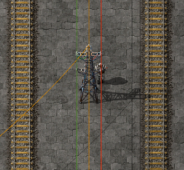
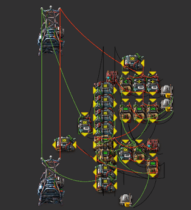
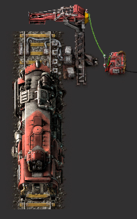

Time to write some stuff. :factorio-gun-turret:
Me and some friends have weekly factorio sessions where we are building a big base.
For some reason I've gotten really sidetracked into making complex circuit designs in factorio, so that's what I'm spending most of my time doing.
We initially joked that I should write a Confluence page for the various circuits, but as of yesterday it is now real requests.
So I'm going to make some posts about some of the components I've produced.
Table of Contents
Bus network overview
It is a common pattern to add green and red circuits to the power grid in rail network blueprints

The green and red circuit networks have been allocated to
-
:factorio-green_network: The data bus.
General purpose signals can travel here.
Circuits on the network do not output signals here, unless told so by the control bus. -
:factorio-red_network: The control bus. Components connected to the bus must adhere the control bus specification.
Different architectures/bus designs/philosophies
I have thus far categorized larger circuit designs in two groups. The data bus :factorio-green_network: is the same in both, but the usage of the control bus :factorio-red_network: differs.
There is nothing that prevents one design from containing devices that internally use a bus design of the other type.
It is however advisable to decide which design to use for the global, rail-connected network.
Sovereignly owned buses
These buses are owned by a single central controller. The central controller orchestrates all bus traffic, and any peripheral devices are slaves that can not initiate bus traffic.
Shared buses
Devices connected to these buses negotiate and cooperate for access to the bus. Only a single device can control the bus at any single time. Once control is obtained, it is retained until it is volountarily released. Multiple bus operations can be performed during this time.
Shared access negotiation
This section contains the details for the negotiation protocol. Click to expand.
A device outputs its [ID] on the :factorio-red_network::factorio-info: signal for up to two ticks. It will read back the :factorio-red_network::factorio-info: value from the bus, and if it is the same as the [ID] there is no competition for the bus. If there is another device trying for access at the same time, the value that is read from the control bus :factorio-red_network: will be the sum of the individual [ID]s, and we thus know there is contention. Devices must keep their [ID] on the :factorio-red_network::factorio-info: signal at least until they have determined wether they are the master or not. If they become the master, the :factorio-red_network::factorio-info: signal must be maintained until ownership is released. The value of :factorio-red_network::factorio-info: on the bus must be examined for the first tick that :factorio-red_network::factorio-info: was on the network in order to determine ownership. However, deciding on this may happen many ticks after the fact. The fastest design I have made requires only two ticks to determine this. Once a device knows there was no contention, it will put out its [ID] on the :factorio-red_network::factorio-signal_M: signal. This is purely done for debugging purposes. During the ownership, the :factorio-red_network::factorio-info: signal may fluctuate as other devices are trying for access. But there is only a single master, the [ID] of which will be stable on :factorio-red_network::factorio-signal_M: signal.A blueprint that performs this negotiation is available in Bus Negotiator.
Control bus :factorio-red_network: signals {#control-bus-spec}
| Sovreign bus | Shared bus | Signal | Description |
|---|---|---|---|
| :white_check_mark: | :white_check_mark: | :factorio-red_network::factorio-signal_R: | Address of register/device to put on the data bus:factorio-green_network: |
| :white_check_mark: | :white_check_mark: | :factorio-red_network::factorio-signal_W: | Address of register/device write data bus :factorio-green_network: content into |
| :white_check_mark: | :white_check_mark: | :factorio-red_network::factorio-checked-green: | Used to clock the addressed device, details depend on device |
| :white_check_mark: | :factorio-red_network::factorio-info: | Used to query the control bus :factorio-red_network: for access. Typically a device uses its [ID] for this. |
|
| :white_check_mark: | :factorio-red_network::factorio-signal_M: | The [ID] of the current master of the bus |
Addressable memory circuit

Blueprint
0eNrlWkuO4zYQvcqAq0wid0TqZxtJgAkyCLKYWUwWvRgMDFmi28ToY1BUJ0bDB5hb5Gw5SSjLttwybbJk+QNk02hJ5DPJV6x6VeQLmiYlXXCWCTR+QSzKswKNP7+ggj1lYVK9E8sFRWP0zLgo5RsLZWFavahbDD6glYVYFtO/0RivvliIZoIJRmuY9cNykpXplHLZoOldTgsRCpZnEnGRF2z9r/w5CTNwHzwLLeU/3oMn0eWgMhpVDYqqBa7+cBrv/wCTT75syXhUMrF+xCvr1WfiVqN74pRm7Z7Y1XddrfZebudDdvMJORPzlAoWDaI8nbIsFDk/nBrezsyV84oZr6dVjz3PBM+TyZTOw2cmO8seDepEfo7Zbg1mjBdiYkxSNKfR14qoglY4FZhc/YrzgaQkX1BeUzFG38u+eSkWJRx9dQZVX2RfUjVW8uMcNlex4ewGFtOIxZSfpqImgqxNbI8KV03FBrInHhoC7OohXYR8Pcox+qk7ARXSYilHWGZiMuN5OmGZxEHjWZgU9Cx6jmwc8roh0fA4MuPR3c1vu0wnibRrIh0jGmcsEZQDfdw0CbfrW1ac+b6/7/M6Lyw5sgAe1K04MFvuy618UroU+7VH+aGDQX/qyZt0p8CHUkBuQ8HjpSh4BFHQjpieJqCe/uxACHVP/zRpfcbYzAkFUAMY2NvYTl5bALmsBcS5uFhkX2MfMwOlix/CIvvQbDcOu5OBr0oGy2b5xdiowUF0BKc3GvZgdAWaveWZ0TnqItTsawq1LY8Ngbil036+gE4TvITItLYrI0d1mgPTaQRr3LehIMc2iGjnBkTvS5guevBMi9g47550uyq2neIZO+0NPDQkFoOIJTcg9vG2xDYO5BIZ2YHjtSGKaaQJCiPT9A8fc/C4KYwUaZgkgyRMF4d24TZ6SWUH20Hs7KAXR95OuH9BoIiqcLrqJXAgS4AvuAQ7H9PXCtiGK+CCVVvtKOwr51A0jOZK0daDZquxYeur89q+oZP2Oqtm+6qi+abVSbMsxtIyAMpyTsMd3VB+Z0KvmwXd24bSVCPa5X+dPMa6EoNhnRPDawzOhk9y1eOD2/GpUC/ENAAPQRp1t1Uco6XtRaMeROY+kkz6TPlSzFn21DHTNAz6lpaVkymmaRAbdWPRrAZ3x7WCs2k8q2CgCknHEwrTegCxweelNZlXFoT3J0gIqCROHDMXSXCH+oxzZwem97K5Dj2gpSPFMjom1ew9Ta0OB8bZvEb1kuCYGRHYga2j8tB9ntfuWU25MZndaa0FwGk8e7nd/BscAsJ5rxxLAML4TYkxBGH8rsQY9TAXbINAflWDOCCQP9QgLgjknRrEA4H8qQbxIVcDjGOo06H0em+XXP799s+9SKKRxmsD3HSrJ6gmS4D6+qh5uLArdqAbdidiR3u4hieBpHuNyrtqCnxfp+wEdOWF+KbKg7QvUxDD0hTpXppy/yelDCPNRTT7SEO0Z0y06f4MjE4x6jTNv+AhRpjte/6eTjLUpSS5ZkzQVMI1d6MtlIRTKgeK3sUxp0URThP6gaY5X75Jvz44b777mGeDv6SRUjHnefk0//Hj+7eymwxZxXrGQeBgOxgG3tBdrf4DlJuZPw==
Overview
- Memory cell
- Can contain all but 3 signal values at the same time.
- Non-writethrough
- Data clocked in on negative :factorio-red_network::factorio-checked-green: flank.
Usage examples
- Build a [requester station], and use the memory to tell the station what to request.
- Build an artillery station, and enable/disable it remotely.
- Build a giant refinery and control the processes and limits remotely.
- Control enabling/disabling of train stations remotely.
- Or go wild like me, and use it as a very large general purpose register for larger constructs.
Usage details
Initial setup
- The top constant combinator contains a :factorio-signal_black: signal which represents the address of the memory. You will want to assign a unique address to every memory instance.
Bus interaction
The circuit is controlled with :factorio-red_network::factorio-signal_R:, :factorio-red_network::factorio-signal_W:, :factorio-red_network::factorio-checked-green:. See the control bus :factorio-red_network: for an overview.
New data is sampled from the data bus :factorio-green_network: at the tick that the clock signal :factorio-red_network::factorio-checked-green: has a negative flank. As factorio has discrete ticks, this means that the data sampled is from the last tick that the clock signal :factorio-red_network::factorio-checked-green: was high.
Any signals except :factorio-green_network::factorio-list-dot:, :factorio-green_network::factorio-info:, and :factorio-green_network::factorio-checked-green: can be stored in the memory.
Signal lamps
- Upper lamp: indicates the memory is addressed for writing.
- Lower lamp: indicates the memory is addressed for reading.
- Bottom-most lamp: indicates that the cell contains any non-zero content, and/or is addressed for reading.
Data ports
The left-most arithmetic combinator is diode/gate from which the memory content is always available. Hook up your own logic (like remote alerts or anything) here.
How to read the content of a cell
- Put the address of the memory in :factorio-red_network::factorio-signal_R:.
- The content of the memory will be available on the data bus :factorio-green_network:.
How to write data to a cell
- Put the address of the memory on in :factorio-red_network::factorio-signal_W:.
- Put whatever data you want to write on the data bus :factorio-green_network:
- Toggle (up,down) the :factorio-red_network::factorio-checked-green: signal.
How to update/adjust the content of a memory register
- Put the address of the memory on both the :factorio-red_network::factorio-signal_R: and :factorio-red_network::factorio-signal_W: signals.
- Add the adjustment to the data bus :factorio-green_network:
- For example, hook up a constant combinator with "-5 wood" :factorio-green_network::factorio-wood:
- Toggle (up,down) the :factorio-red_network::factorio-checked-green: signal.
Complete Bus negotiator {#bus-negotiator}
Blueprint
0eNrtXW1u40YSvUpAYIHdrDRgf1IykACaeBAYiJ2J7YGRXQwEWaJtYmhSoKjJGgMdYG+xP/Zke5Il9WEpVDe7q1WklXH+zFimVJS7Xr2uel3d/OLdxvNwmkVJ7p188aJxmsy8k39+8WbRfTKKy9/lT9PQO/GiPHz0Ol4yeixfTcJxNAmz7jh9vI2SUZ5m3qLjRckk/Jd3QhYdo4FRFuUPj2EejdU26OJjxwuTPMqjcPWNli+ehsn88TbMips8m5rNb2f5KI/SpDA/TWfR8sfixoWZLu14T8V/waL8ThUT9NlE+WfnoyTf/S77tuQbsbJW/FB800mUhePVddkpTeRZGg9vw4fR56j4fPGhuyjOw0wzoJ+jLJ8Xv9n+Hct3dC/LURin89IjxDCmOhvvdmz4O2MKsfGL0gYD2ThT2hAgGxdKG7LERzQblqN/N4pn4fJNSbLyyKy0S8p/snCyi56oeMWKd0bZeB7ly5dk8XGhQgczYHUfHzp0UDU6tmaHxeVJ9PzF76Jslg9hgJmFpY3hBsjLoUqnYbaKixPv78XH0nk+ncMML+yHtYjY4s1Uc1X8ftCpZtC5a0iKJkPyFCEkf0YIyQuEkFRTA0cIa0IQ/hhC3QNb2AW2cA1s0XJgnzYV2KegwOa1gc2qgd353WXSs3OKhAW+38pUrME5COanCHH/05HE/fhplKipsLfEiApQ91kYJlXQBBoUBNs7Po7iuBuPHqc1zl8FpMrdG8g9x59D+K29vxN3BSKno2yJyBPv+/LyfBYW94jTEll5NgeQVb/kOeXgSM3g9KwGh7YzONcND06FRVjlF3Q/n9CMJvE1w9m3Gk7SznAOGh3OXmX0Av1o6fiZ+DCCpq0Q9DUCQV8iEPSvCAQ9jZJPKOTa07mQwFxIWnHhAMGFvyC48ENj5S5HgKNAmOslyMZTGMfpbyiA7OsASa0omLdDweeNUnAxg2k5l+vGh1mND2tnfG5anaJIzYwudOMFVA94KwR3jkBwAwSCu0IguGsEgnuHQHCXCAS3whYGvxGdmkUEDJCsFUDeHAkgz44EkCUbocCA6WCwFTduo/tuGBfmsmjcnaZxuA+CYE3m9twpe/paUpsMBq5KK28Sm1cI2LxGwObgyMnSWSOt6nFa6uq5qqS2+MBSScPR+KEpoXRle+EsQVODbEFqpVWik8lIv24hdt8zZOUZZqlfr20e5pabHZ9Ahc6dtPJ///6vg9/WU9z0abiMneFdlj4Oo6Swsc5LActafM9lury0b3A+qf5iZ8nMyuKeAculTOqDg5lqgpm+UDATWgnnvzjA4id9LCvHXyhWLev8RbUOAEov3Wf5jLW1rum/YKsBxvrGAGG2/RWhNNn9W/izjeAPt76qBrhvWO3rWxISdVzu+zMcXmE4vFV+jz5GSPkIgwqMyyttXIKKTdtIY6BU0YdN+8eVKf7HISV4X5MprujxEK/U90RRy4YVyqHpG4Ul/FjZ27mLJ5esu5vZfevgxjNQlWbMq0X9dSYhZRw1FYUB7G56Zdx0J4UlNeAEiDToC5DGmQvULvdI43s3rLlRhlV1WV/h2bRX6ZFYXWSp3r0GWdwSORJKVfxlCs0ouUvVhebhZHQOLDMZhziRBZazRgAKYv4CGpFxyRU+9uOHcPypwQA1SQDW3tnp5sqzUXT/kHeL/2KV8r7yDFWa2SqBpZWkO8tTxRJxl29sqL05C4sYyNPh0sZ6kDrFcIwKci0MTsPJ5lKpnnVW93q+BAw6SGhwqhjOImrzTXx++HBWJhD73fvOkhc9Fsmri0BF9QK2GsEExEbEcjcFgUnWa2eQNulo44njZiTm207a1XdWkwvOINWKsN0346rt0Ca1nQsEbefnxtrMAgQbPQQ9pI/Q2g7UVBxW31VBoVt7Z3Y9VN0KCptqotqknXqK+e6wPipWQwfcMoDBcoMPI+vGc3iMmXOdq4DUcWko5Ktd7KxnIGhquK5fTlZnU5abcZhT/U+OXjR8j1L/DzAncwNkeABKxqRB/+nB7lbDJYY7KSypkSYdpc22s3R3velQIhqApE1mkC4pTGswSZfWApKDJTVgnFQN2iY17ST8mHXEOWJPi72iHEBKBGbZXMZ6Lk4kf0B92a19aZslYnjbFHqKrMA6g6xY6h8iZJq+lxZNWw0sTovRT/Poc6jV0egbJgPSC0ospVlU2FqTc1nB5OHjcijHaeknoTyhwAcKd77SCgHLU5vdCv4CONOZGiO/9dRHMVBXBc3/irT8q4O1/Mo816+NCWkpp3Hm6By/5e7cm6Zac29gZxhIWKVkK2ty7tJe4R9ZOvKdW2BgTVAKZVEzAXFeP2VIBlut4YZoFdQSBsJNMvmamPIfeKue6mZcS/mKO5aUbfvi2iXDfItRUQKpk0ElikoMgSQMbkgKhbVE4WBJjafAUaJoG1CDpqbaa1QFgktMBYJLLAWCWzZHcafi1W+9eMWd7pFL0h64kLQsSaECRf19tRjoO2CgVQgYDpRxa5bFBQE3gEDY6xJwS3VTkAEkwlKXEFClQNnhI6BbhzabyGlb+3QJZWX+67SkjrHV4QeErQ4/Imx1eI+wpH6JsaR+gbFN4UfdNoXDd24QgbF1Q2Js3Qgwtm4AzwkQtudUugpwba/DX6lLSuIzQQQtuaFBFc5CRKMAPcFQg9q6jrl0u30Nq1To3W7EkLEZFBxprS0JoHYkDHWxrZQrXCTEVtfCKqoRRBFCSTvfIuJJ2usHAtQdadn3LRyVQnoUnE4JD3iPyVIT2eX0wcVpC2srVTV2LzE3SYjUB5OF2onSoT+qVXZ3Fxcb7VOARqswaIsS1M0iDIqgtO5mcbCkBpKjtth2hufebdeyVm1opxOm6yA1iRua4IS1NulgSY0nF22SvBJiQlavDHuIhbWE6WCpDpSGU4iEpcQpXCRO2vruQafd5kcGJWGQL2VgXcPALdXNlwYhVFquoEmoEMqVVpx2kLE/Wy3qdhRQl3JYBRXLRgnpuDmMa3flHPxgD9cH+rxH2Ml1eSQ7uc4xZOd3GLLzZQOnVklL1U66nJVzbATjJrG8SDcX9Hg9btkBJLlDec5eSeqCWZ5LDitb9tIRCZljJIcVdzVzm2U5JcFi3eaZGWLxug4NkNTg2vpMU/VupUOAwpvBG0d8asDWKgYnS+vHJUnQCcXSlpFddm2xV7KfFLmYtNYdYLqCMOkKpoU43Un0sgc/HZ8DznqT5qpVd6Cz7klssm/18OEVjINFeYNZkbpN5vH6WcbbfUrla9bfecOqkKmcb/Nxmf6WD1A+2Xlgc8eLR7dhATHv7Xx2Ed4XBksYfnP+6Q355q8/FLiMwzzslD+Mxnk4+Vvxic9FrbS0HASM+D3BCCWLxf8BNhdqdw==
The bus negotiator is a basic control device that requests access to a shared bus.
This device is composed of the LCG pseudo-random generator generator, a ID-generator, and the basic form of the bus negotiator.
Overview
- Request/Release access to the shared bus
- Automatic retry until access is obtained
- Random retry-delay to avoid deadlocks
Usage examples
- Lock the bus for manual manipulation
- Enables design of non-centralized devices
Usage Details
Initial setup
- Put the train in automatic mode and have it wait at the station (see ID-generation)
- Start the device by putting it into idle mode by toggling the state-seeding combinator on/off.
- Click to show in image
- Connect it to the control bus :factorio-red_network:
Bus interaction
See the details of the shared bus protocol
Picture
Data ports
The data ports have been gated to prevent accidental signal corruptions.
-
Control: There are constant combinators predefined that can be used to request/release access to the bus. These supply :factorio-signal_R: to request, and :factorio-signal_D: (done) to release.
- Click to show in image
-
Output: A constant combinator can be used to extract the state if you want to hook up your own logic. The state signals are all in the range
[0,1].- Click to show in image
- :factorio-signal_I: - Idle state.
- :factorio-signal_A: - Aquire state.
- :factorio-signal_T: - Try state.
- :factorio-signal_W: - Wait state.
- :factorio-signal_M: - Master state.
Signal Lamps
Counting from left to right
| Color and location | Description | Signal to enable |
|---|---|---|
| :factorio-signal_cyan: Upper row, 1st | Idle state | :factorio-signal_I: = 1 |
| :factorio-signal_yellow: Upper row, 2nd | Aquire state | :factorio-signal_A: = 1 |
| :factorio-signal_pink: Upper row, 3rd | Try state | :factorio-signal_T: = 1 |
| :factorio-signal_red: Upper row, 4th | Wait state | :factorio-signal_W: = 1 |
| :factorio-signal_green: Upper row, 5th | Master state. The bus is ours!! | :factorio-signal_M: = 1 |
| :factorio-signal_red: Middle | Red light, indicates that there is no [ID] source yet. See Initial setup for details. |
UUID

Blueprint
0eNqlVMuOqzAM/ZWR11DxKGXEejbzAV1dVSiA20YDCUpCdauKf7829KWBKw2dDShOzrF9fJILFHWHrZHKQXYBWWplIftzASsPStQcc+cWIYOTNK6jiAdKNBwYT/hb6D2QqsK/kIW99yIyWoT8fELGi5AfT8h1v/MAlZNO4tj0sDjnqmsKNNTOA+2MkIej8+nHpK22hNKKMxKTH3lwpt+652K+sUR3FiZRvnW6nVIENwYPaAbO6Dov8ChOUhs+YVFVudP5QAHZXtQWPTAoqpz5WqxuW850tDMs7ls/lkeqvYZ+rEFhyfVZhoX8ORhE9ayTrFj+HZ+3TozNwHb7ySJPZIjvudhjTijnl7oppBKOWpzoEa6SUZF4lRB/Jc1YDmSbeYX2snZoXjFvqTt2f/AbG084XjD0hOMFa084BpNLm+uba5YMN+Lhzsxyfc9daxqidvKE/70VwSrepOF7ymPURhLV1SpcpMNmqKHU3GMylyxZegujOZbNQpZgjiRdSEKVkPq2PGLV1dc35qEYr9dP+6N1v12k3TA/kokij6fag1oUWF9PvTVfq4hiJ/L/gE3TOAzekziMwr7/BzMG95o=
This blueprint generates a game-unique ID on the :factorio-info: signal.
The ID is 100% guaranteed to not collide, so it can be safely used to give ID's to devices and circuits without having to do central book-keeping, and it makes blueprinting easy.
Initial setup
Just put the train in automatic mode and you are set.
Misc
Diodes / Gating {#diode}
It is sometimes important to prevent back-propagation of signals to prevent accidental state corruption and isolate circuits.
This can easily be achieved with arithmetic combinators. To only allow :factorio-signal_A: to travel in one direction, simply do :factorio-signal_A: = :factorio-signal_A: + 0.
If you want to allow all signals through, instead do :factorio-signal_each: = :factorio-signal_each: + 0.
You might do * 1 as well, but I find it easier to spot diodes when using + 0.
Chronological (or something ¯\_(ツ)_/¯ )
- Next: Trains as belts?
- Prev: WSL2 & USB Serials
- Next: Trains as belts?